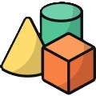

Transformasi Geometri
Pengertian Transformasi
Sub Materi
Pengertian Transformasi Geometri
Objek Sebelum dan Setelah Bertransformasi
Uji Pemahaman Transformasi
Your browser does not support the audio element.
Your browser does not support the audio element.
Your browser does not support the audio element.
Kamu harus menyelesaikan halaman ini dulu!
Pengertian Transformasi
Sub Materi
Pengertian Transformasi Geometri
Objek Sebelum dan Setelah Bertransformasi
Uji Pemahaman Transformasi
Tranfromasi Geometri
Salah satu objek geometri yang sering kita lihat adalah segitiga.
Ayo coba lihat animasi di bawah!
Kalau kamu perhatikan, apakah segitiga di atas mengalami perubahan?
A
Tidak Berubah
B
Berubah
Berubah
Yang terjadi pada segitiga di atas merupakan contoh transformasi geometri loh.
Kesimpulan
Transformasi geometri adalah perubahan posisi atau ukuran pada objek geometri.
Dari definisinya, menyebabkan ada beberapa jenis transformasi geometri.
Ada jenis transfromasi yang mengubah posisi objek:
Translasi
Refleksi
Rotasi
Sedangkan ada juga jenis transformasi geometri yang mengubah posisi dan ukuran objek.
Dilatasi
Semua jenis transformasi tadi akan kita bahas nanti
Yuk kita ke sub materi selanjutnya